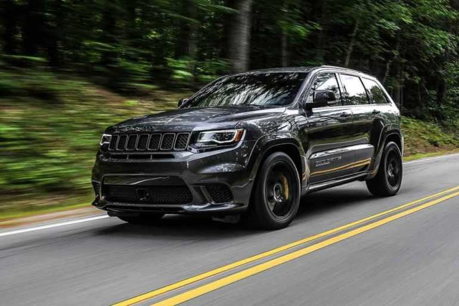
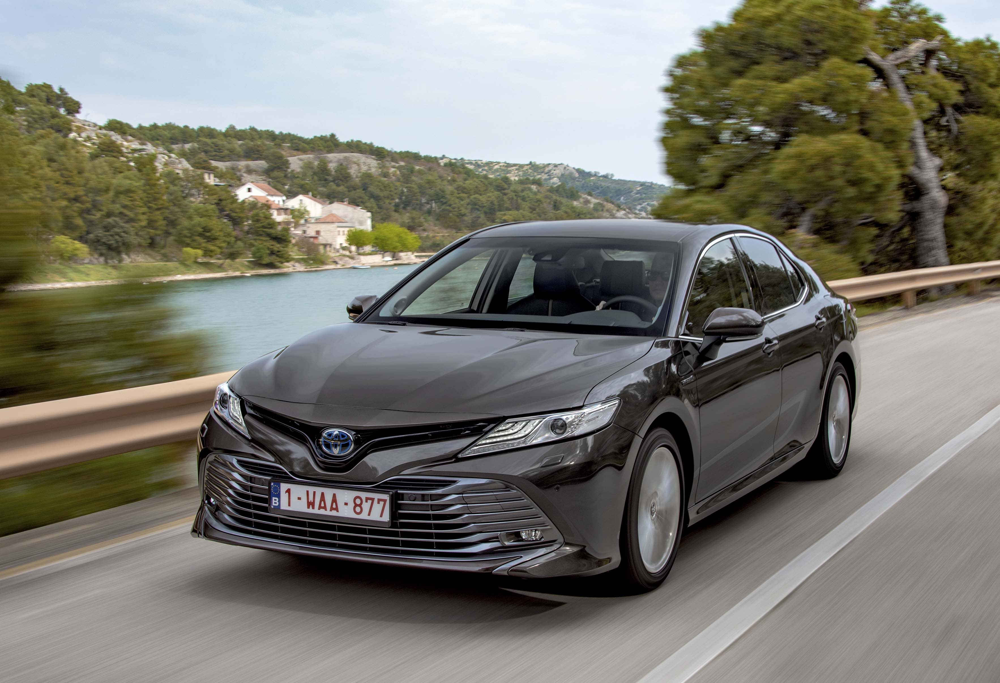
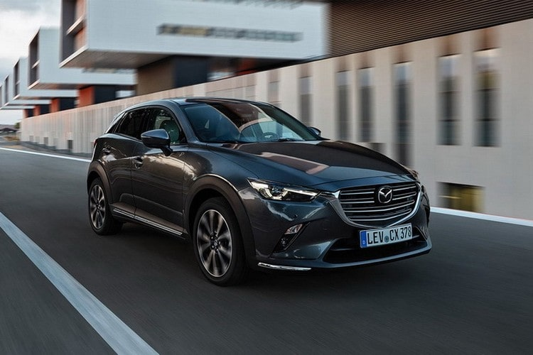
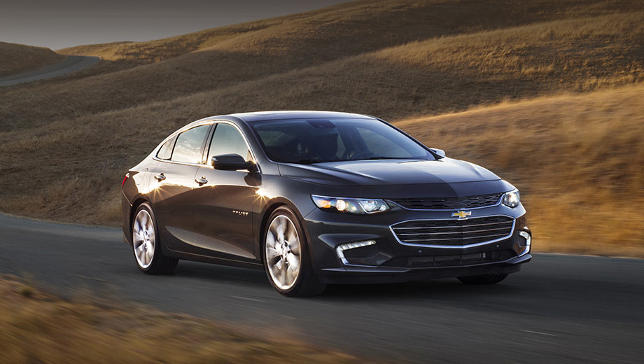

Мужчины и женщины по-разному выбирают автотранспортные средства. Обращают внимание на разные детали. У каждого свои представления о качественном, стильном и крутом автомобиле. Поэтому вполне резонный вопрос: как выбрать хороший автомобиль для девушки?
Дамы обычно руководствуются следующими критериями отбора:- современная стилистика;
- комофортное управление;
- высокое качество оформления салона;
- стандартный опциональный набор для удобного управления авто;
- система безопасности;
Учитывая эти данные, эксперты Carfast.express провели серьезную аналитическую работу и выбрали 10 лучших авто для женщин. Но помимо этого, у нас есть и собственная статистика продаж, которую мы также проанализировали, отобрав девушек-покупателей автотранспорта.
Honda Civic
Это один из лучших компактных авто в своем классе. Машина универсальна, представлена в нескольких типах кузова:
- хєтчбек
- купе
- в кузове седан
Стоимость Civic несколько выше аналогов его класса. Зато качество и возможности автомобиля полностью соответствуют его возможностям. Машина отлично подходит для комфортных поездок, когда в салоне и пять человек. Объем багажного отделения Honda Civic 337-343 л.
Сильные стороны модели в следующих характеристиках:- современное дизайнерское оформление;
- качественно сделанный салон;
- комфортабельные кресла;
- экономичное потребление топлива;
- энергичный мотор;
Машины укомплектованы двухлитровыми моторами, предлагающими 158 лошадок. Это стандартное решение. Есть и турбированные двухлитровые и полуторалитровые варианты. Их установка происходит опционально. Автомобили переднеприводные с МКПП (6-ступенчатая) или бесступенчатая АКПП CVT.
Стандартно в салоне имеется экран 5 дюймов, есть порт USB. Можно воспользоваться Bluetooth. Хорошая стереосистема (4 динамика в комплектации). Civic получила пять звезд в рейтинге безопасности от Национального управления безопасностью дорожного движения США.
Toyota Camry
Пятиместная универсальная машина выполнена качественно. В рейтингах по разным критериям эта модель неизменно оказывается в ТОПах лучших авто. Каждая девушка по достоинству оценит это японское премиальное творение. Комфортабельный салон, легкое и интересное управление. Очень вместительное багажное отделение – 400-428 л.
Преимущества Toyota Camry- высококлассно оформленный интерьер;
- шикарная активная безопасность;
- приятная езда;
- экономичный расход топлива;
- мощная силовая установка;
- солидный перечень стандартных функций;
В базовом оснащении силовой агрегат 2,5 л с отдачей 203 лошадки. Опционально можно поставить более мощное решение – движок V6 на 3,5 л с мощностью до 301 лошадки. Эти силовые агрегаты великолепно работают с АКПП (8-ступенчатая). В городской черте расходуется около 8,1 л на сотню километров. Ездить за рулем Камри в одно удовольствие. Автомобиль динамичен, маневренный, невероятно послушен и покоряет плавным ходом.
Mazda CX-3
Автомобиль очень приятен в управлении и считается в этом плане одним из лучших в своем классе. Лучшую модель сложно найти, если хочется получать от вождения истинное удовольствие. Стоимость субкомпактного кроссовера CX-3 в разы предпочтительней по сравнению с конкурентами. Багажное отделение – 352 л. Вместительность авто – 5 человек.
Достоинства модели:- управляемость выше всех похвал;
- прекрасно ускоряется;
- экономично расходует топлив;
- солидный набор стандартных функций;
- интерьер высокого класса;
- мощная активная безопасность.
Относительно управляемости автотранспортного средства и технических характеристик. Прекрасный разгон Mazda получается и за счет стандартной силовой установки с отдачей 148 л.с. На повышенной скорости без проблем проходит повороты. АКПП 6-ступенчатая установлена базово.
В городской черте для заправки CX-3 с передним приводом понадобится 8,1 л/100 км. По управляемости конкурировать с CX-3 нереально. В своем классе машина лучшая. Мощная тормозная система, тонко настроенное рулевое управление. Каждое движение кузова водитель четко контролирует на поворотах.
Chevrolet Malibu
Автомобиль очень приятен в управлении и считается в этом плане одним из лучших в своем классе. Лучшую модель сложно найти, если хочется получать от вождения истинное удовольствие. Стоимость субкомпактного кроссовера CX-3 в разы предпочтительней по сравнению с конкурентами. Багажное отделение – 352 л. Вместительность авто – 5 человек.
Достоинства модели:- управляемость выше всех похвал;
- прекрасно ускоряется;
- экономично расходует топлив;
- солидный набор стандартных функций;
- интерьер высокого класса;
- мощная активная безопасность.
Относительно управляемости автотранспортного средства и технических характеристик. Прекрасный разгон Mazda получается и за счет стандартной силовой установки с отдачей 148 л.с. На повышенной скорости без проблем проходит повороты. АКПП 6-ступенчатая установлена базово.
В городской черте для заправки CX-3 с передним приводом понадобится 8,1 л/100 км. По управляемости конкурировать с CX-3 нереально. В своем классе машина лучшая. Мощная тормозная система, тонко настроенное рулевое управление. Каждое движение кузова водитель четко контролирует на поворотах.